Análise de sobrevivência da dívida ativa
Introdução
A análise de sobrevivência é uma técnica estatística utilizada para investigar o tempo até que determinado evento ocorra. No contexto da dívida ativa brasileira, essa análise pode ser aplicada para compreender os períodos de tempo nos quais os créditos saem desse estado. Dessa forma, é possível identificar fatores que influenciam a probabilidade de um crédito ser quitado ou regularizado, permitindo uma análise mais detalhada e estratégica sobre a gestão da dívida ativa.
Neste estudo, utilizamos dados provenientes dos dados abertos da Procuradoria-Geral da Fazenda Nacional (PGFN) para realizar uma análise de sobrevivência dos créditos ativos em março de 2022, comparando-os com a situação em março de 2023. Foram analisados diferentes grupos de créditos, considerando variáveis como tipo de pessoa (física ou jurídica), indicação de ajuizamento, tipo de receita, clusters de valores consolidados, situação da inscrição e tipo de situação da inscrição. Para a análise, usamos uma amostra de 4,156 milhões de créditos inscritos em dívida ativa, sendo 3,333 milhões ainda presentes na base em março de 2023 e 823 mil já excluídos. Essa abordagem comparativa nos permite identificar padrões e tendências, auxiliando na compreensão dos fatores que influenciam a permanência ou resolução dos créditos na dívida ativa brasileira.
Análise por cluster de valores consolidado
Os valores consolidados referem-se ao débito na data em que foi feita a extração do dado e engloba os acréscimos legais. O domínio desses valores é imenso, partindo de casos isolados na casa de centenas de reais a bilhões de reais.
As estatísticas descritivas de valor consolidado são as que seguem:
valor mínimo: 0.01
média: 1.4883142^{5}
mediana: 6980.495
valor máximo: 6.8089671^{9}
A figura abaixo, onde o eixo horizontal está representado na escala logaritmica, mostra a distribuição dos dados.
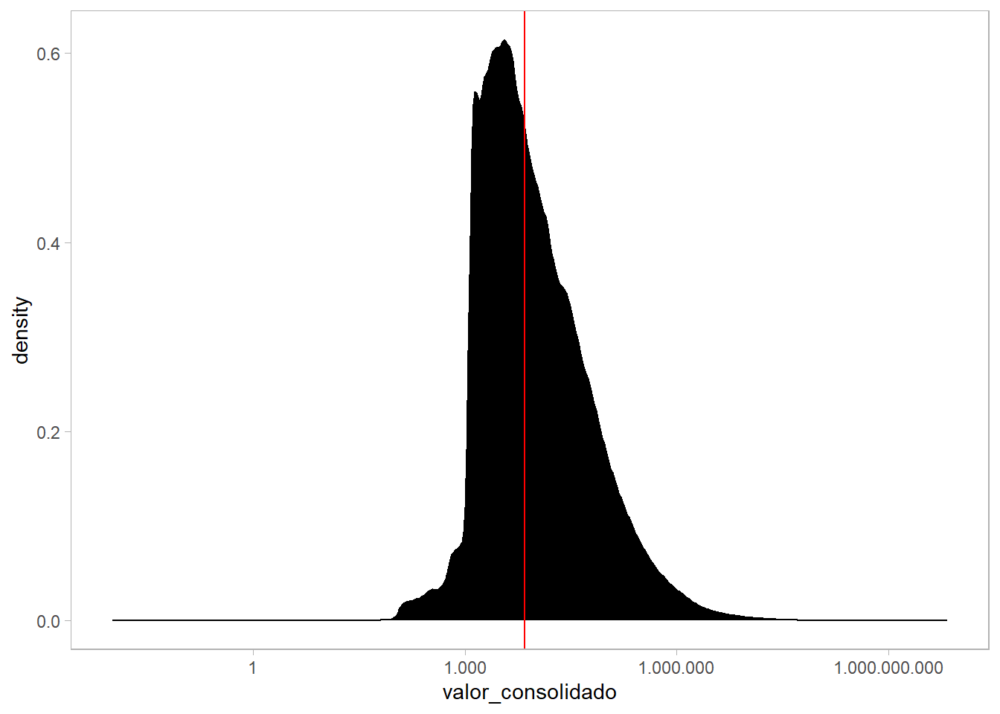
Como se vê no gráfico acima, a frequência de créditos ativos com valores consolidados é muito baixa até o valor de aproximadamente 1000 reais quando há um pico na densidade, com mais um aumento até chegar na mediana representada pela linha vermelha vertical e em seguida uma gradual redução até o valor de aproximadamente um milhão de reais. A partir desse ponto há novamente baixa frequência até o valor máximo.
Para fazer uma análise por grupos de créditos baseados em valores consolidados, recorremos à técnica de clusterização. Utilizando critérios estatísticos e de organização da informação optamos por utilizar o modelo gerado para quatro grupos em ordem crescente de valores consolidados: 1, 2, 3, 4. Abaixo alguns gráficos e tabelas que descrevem os grupos.
Começamos por um quadro resumo das estatísticas descritivas
# A tibble: 4 x 6
cluster quantidade mínimo máximo média mediana
<chr> <int> <dbl> <dbl> <dbl> <dbl>
1 1 4045145 0.01 522953. 30222. 6583.
2 2 93510 522959. 3537409. 1198115. 944732.
3 3 16103 3537445. 30298946. 8835778. 6564912.
4 4 2004 30300870. 6808967071. 120801649. 55256807.Agora um gráfico de densidade
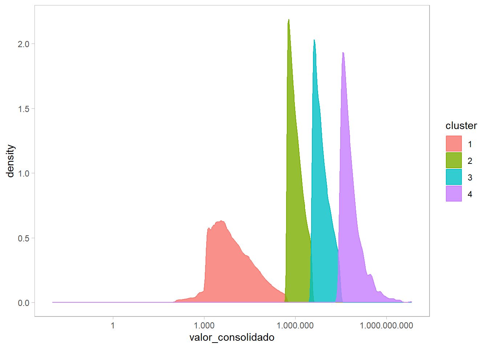
A importância de cada grupo pelo total de valor consolidado
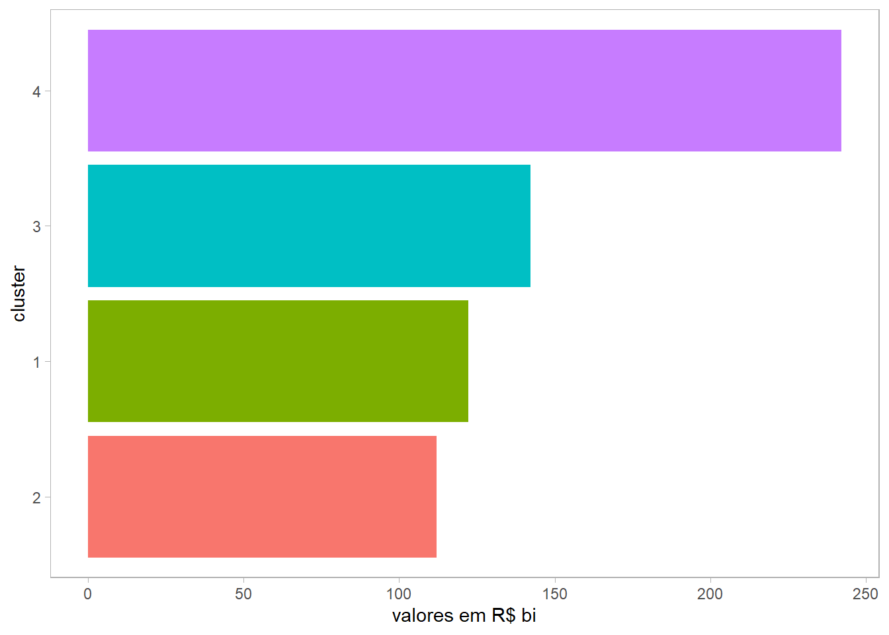
Como se vê no gráfico acima o cluster 4 mesmo tendo bem menos ocorrências do que os outros clusters, possui um valor consolidado agregado bem superior aos demais clusters.
Com essa descrição dos dados podemos passar para as análises de sobrevivência por cluster de valores consolidado. Veja a tabela abaixo
Call:
survdiff(formula = sobrevivencia ~ cluster, data = dados_longitudinais_trabalho_full)
N Observed Expected (O-E)^2/E (O-E)^2/V
cluster=1 4045145 808720 784429 752 15972
cluster=2 93510 13308 32161 11051 11615
cluster=3 16103 1522 6277 3602 3659
cluster=4 2004 78 762 614 619
Chisq= 16188 on 3 degrees of freedom, p= <2e-16 No quadro acima o resultado indica que existem diferenças significativas nas taxas de sobrevivência entre os grupos identificados pelo “cluster”, com base no teste qui-quadrado. Isso sugere que o fator de agrupamento influencia a sobrevivência dos indivíduos, e há uma associação estatisticamente significativa entre o agrupamento e o tempo de sobrevivência.
Observando principalmente as duas últimas colunas do quadro, os clusters 1 e 2 são so que mais se desviam entre o tempo de sobrevivência esperado por um modelo e o tempo efetviamente observado. Como os valores para esses dois grupos são positivos há uma forte influência dos dois grupos para o aumento da expectativa de sobrevivência dos créditos ativos. O contrário, porém, em menor grau, se observa nos clusters 3 e 4.
Agora uma tabela e um gráfico que mostras a evolução da probabilidade de sobrevivência.
Call: survfit(formula = sobrevivencia ~ cluster, data = dados_longitudinais_trabalho_full)
n events median 0.95LCL 0.95UCL
cluster=1 4045145 808720 218 218 218
cluster=2 93510 13308 297 294 299
cluster=3 16103 1522 319 315 324
cluster=4 2004 78 NA 343 NA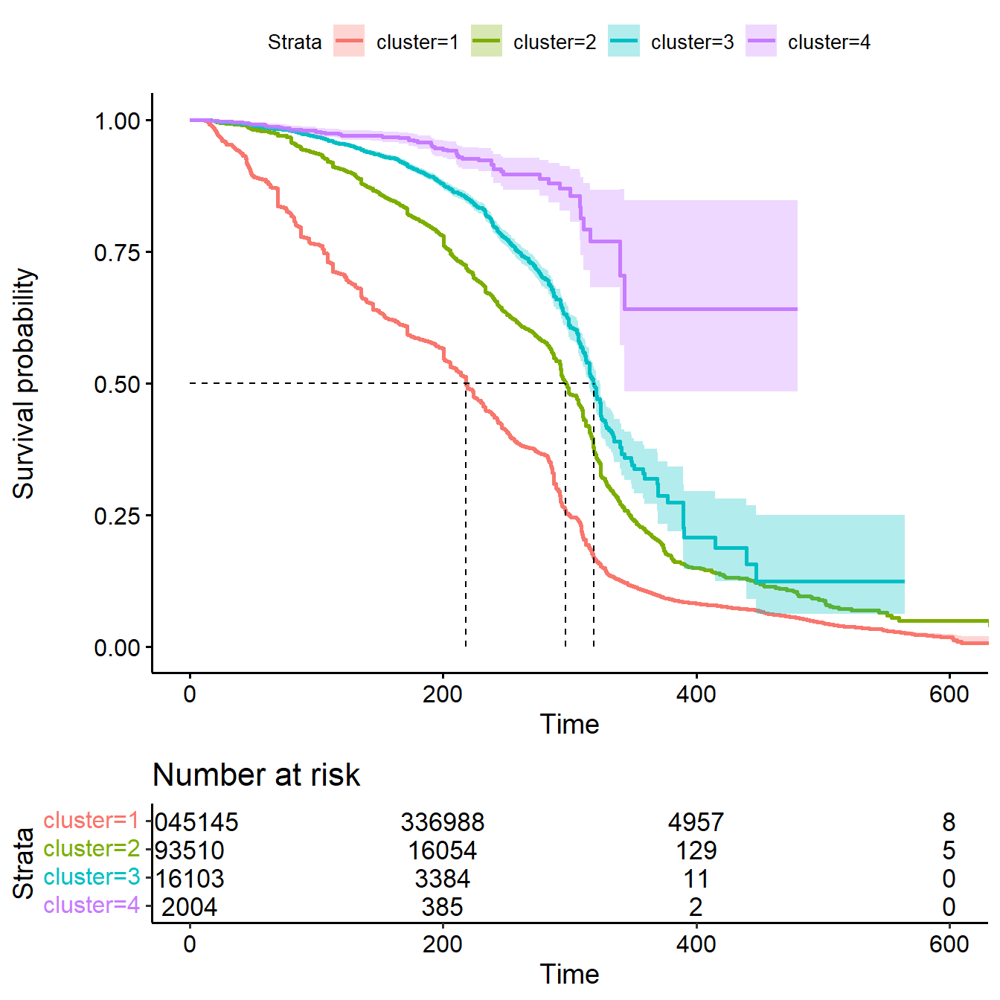
Pela tabela e pelo gráfico fica fácil perceber que o tempo para se alcançar 50% de probabilidade de sobrevivência é bem menor para o grupo de menores valores consolidados do que os demais grupos.
Análise por tipo de pessoa: Física ou jurídica
O poder econômico e de barbanha das pessoas jurídicas bem maior do que os das pessoas físicas podem influenciar de forma importante o tempo de sobrevivência de créditos ativos. Dessa forma faz-se necessário análises dos dados por esse corte. Veja as tabelas e os gráficos.
# A tibble: 2 x 6
tipo_pessoa quantidade mínimo máximo média mediana
<chr> <int> <dbl> <dbl> <dbl> <dbl>
1 Pessoa física 767181 3.13 1218434321. 56660. 5891.
2 Pessoa jurídica 3389581 0.01 6808967071. 169693. 7344.O gráfico de densidade para o tipo de pessoa
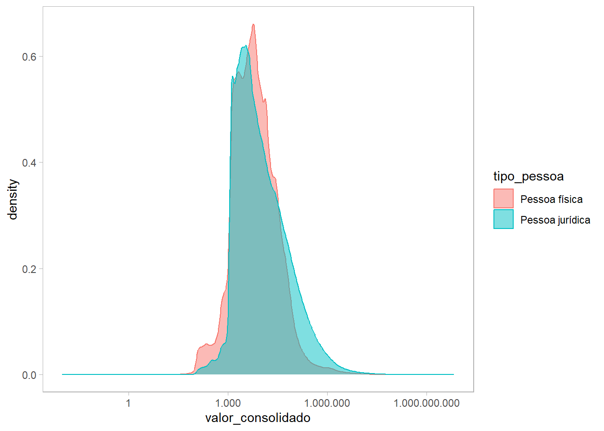
Quem mais contribui no valor consolidado total
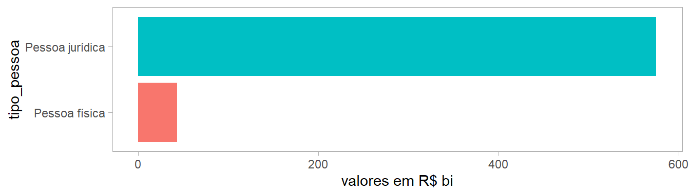
Pelo gráfico acima percebe-se que apesar do valor da mediana entre as duas classes não ser tão diferente, os valores extremos de pessoa jurídica fazem com que o total do valor consolidado para essa classe seja muito superior à pessoa física.
O achado acima aliado ao fato já constatado que os créditos de maiores valores consolidados estão associados a maior tempo de sobrevivência, é possível anteciparmos que os créditos de pessoas jurídicas apresentem taxas de sobrevivência estatisticamente diferentes e superiores quando comparadas com as das pessoas físicas. Antes de irmos à análise de sobrevivência, um pouco de estatística descritiva da combinação de tipo de pessoa e cluster
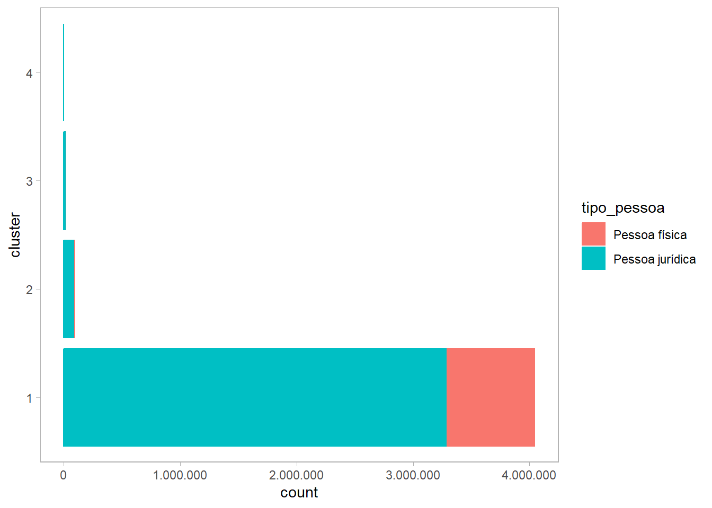
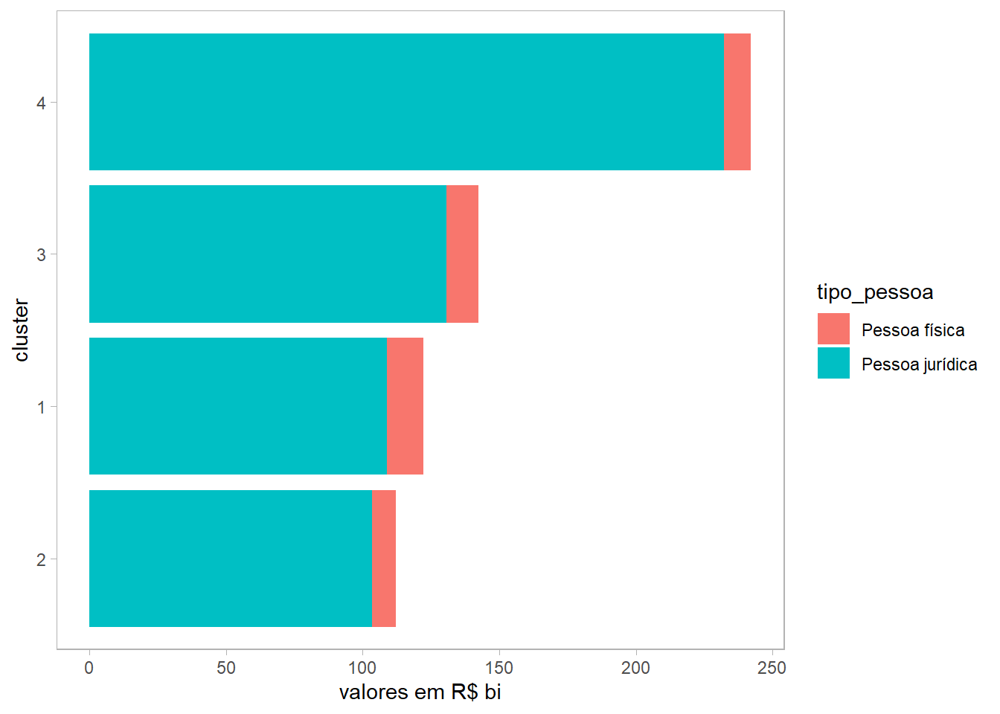
Call:
survdiff(formula = sobrevivencia ~ tipo_pessoa, data = dados_longitudinais_trabalho_full)
N Observed Expected (O-E)^2/E (O-E)^2/V
tipo_pessoa=Pessoa física 767181 155620 127671 6119 7480
tipo_pessoa=Pessoa jurídica 3389581 668008 695957 1122 7480
Chisq= 7480 on 1 degrees of freedom, p= <2e-16 Como se esperava, o teste chi-quadrado revela que há diferenças estatisticamente significantes nos dois grupos. A tabela e o gráfico em seguida revela como isso se dá ao longo do tempo
Call: survfit(formula = sobrevivencia ~ tipo_pessoa, data = dados_longitudinais_trabalho_full)
n events median 0.95LCL 0.95UCL
tipo_pessoa=Pessoa física 767181 155620 192 189 194
tipo_pessoa=Pessoa jurídica 3389581 668008 224 224 225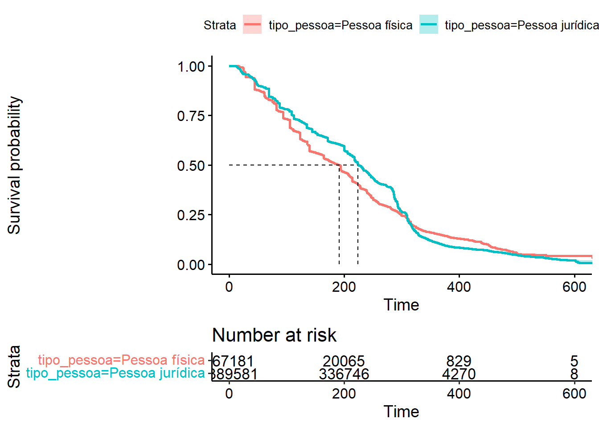
O gráfico e a tabela demostram a diferença entre os tempos para 50% de probabilidade de sobrevivência. São 22 meses a mais para Pessoa Jurídica. É possível que esses tempos sejam maiores considerando extratos por grupos de valor consolidado. Vamos ao próximo gráfico.
Call: survfit(formula = sobrevivencia ~ tipo_pessoa + cluster, data = dados_longitudinais_trabalho_full)
n events median 0.95LCL 0.95UCL
tipo_pessoa=Pessoa física, cluster=1 759076 154033 187 184 189
tipo_pessoa=Pessoa física, cluster=2 6624 1369 227 225 233
tipo_pessoa=Pessoa física, cluster=3 1377 211 241 237 256
tipo_pessoa=Pessoa física, cluster=4 104 7 NA NA NA
tipo_pessoa=Pessoa jurídica, cluster=1 3286069 654687 224 223 224
tipo_pessoa=Pessoa jurídica, cluster=2 86886 11939 299 298 305
tipo_pessoa=Pessoa jurídica, cluster=3 14726 1311 321 317 325
tipo_pessoa=Pessoa jurídica, cluster=4 1900 71 NA 343 NA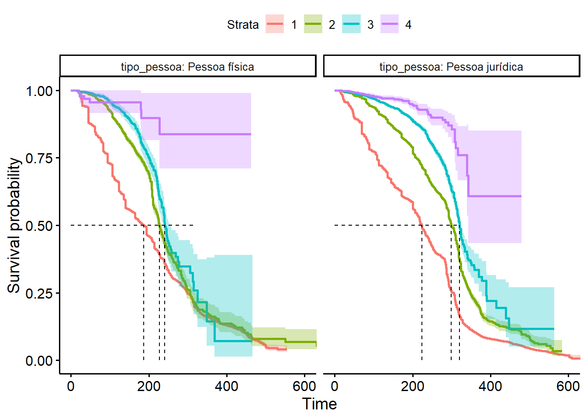
Análise por crédito ajuizado
Os créditos podem em algum momento ser ajuizado e isso leva os prazos a dependerem dos processos mais longos e complexos desse tipo de trâmite. A base de dados que trabalhamos tem indicação para cada crédito informado se foi ou não ajuizado. Vamos analisar essa categoria. Começando pelas estatísticas descritivas.
# A tibble: 2 x 6
indicador_ajuizado quantidade mínimo máximo média mediana
<chr> <int> <dbl> <dbl> <dbl> <dbl>
1 NAO 2852531 0.02 2166742899. 42278. 4514.
2 SIM 1304231 0.01 6808967071. 381878. 23679.Como os valores se distribuem para as duas classes.
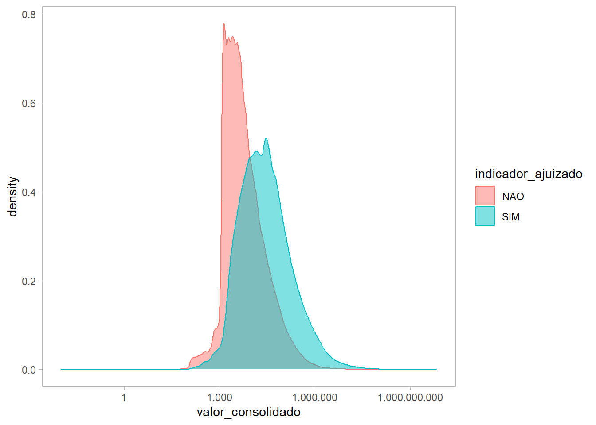
A contribuição para o valor consolidado total
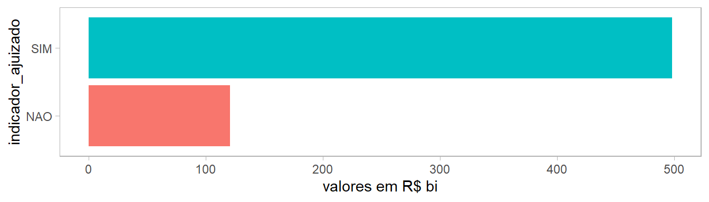
Créditos ajuizados são minoria em quantidade mas quando se percebe a soma dos valores consolidados vê-se uma barra horizontal de comprimento quase cinco vezes maior do que os créditos não ajuizados. O mais provável é que os créditos ajuizados estejam associados com mais frequência em termos proporicionais aos clusters de valores consolidados maiores e a pessoas jurídicas. Vamos às estatísticas descritivas dessas combinações de variáveis.
Começando comparando as quantidades de créditos.
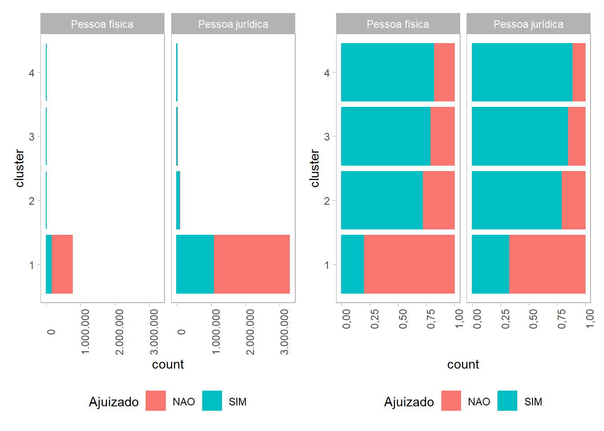
E agora os valores consolidados totais
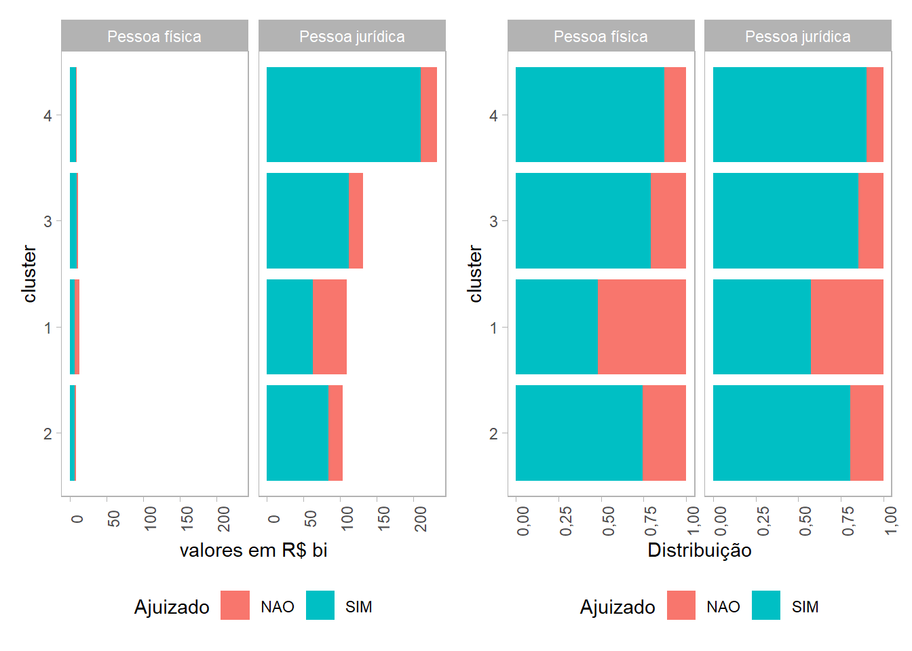
Vamos à análise de sobrevivência
Primeiro a verificação se os grupos formados pelos créditos ajuizados e não ajuizados são estatisticamente diferentes
Call:
survdiff(formula = sobrevivencia ~ indicador_ajuizado, data = dados_longitudinais_trabalho_full)
N Observed Expected (O-E)^2/E (O-E)^2/V
indicador_ajuizado=NAO 2852531 440020 220614 218206 406049
indicador_ajuizado=SIM 1304231 383608 603014 79831 406049
Chisq= 406049 on 1 degrees of freedom, p= <2e-16 Novamente temos o teste de chi-quadrado demonstrando diferenças entre os grupos em relação à sobrevivência dos créditos.
Agora ao longo do tempo
Call: survfit(formula = sobrevivencia ~ indicador_ajuizado, data = dados_longitudinais_trabalho_full)
n events median 0.95LCL 0.95UCL
indicador_ajuizado=NAO 2852531 440020 109 109 109
indicador_ajuizado=SIM 1304231 383608 250 250 251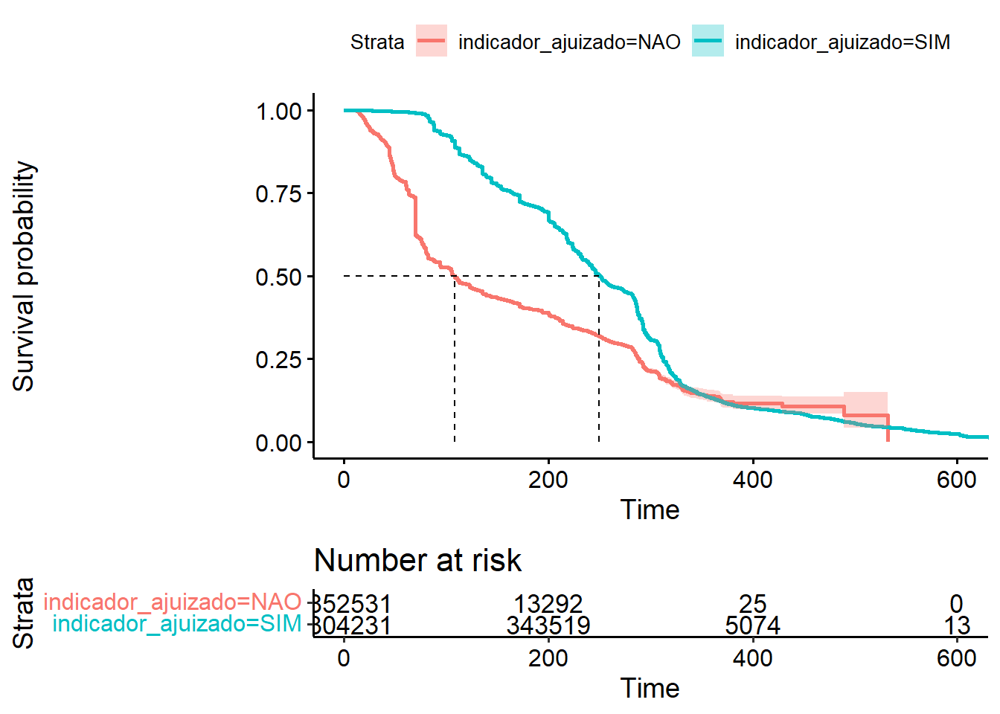
A tabela e o gráfico não deixam dúvida da imensa diferença de sobrevivência dos créditos ajuizados. È mais que o dobro o número de meses relativo à marca de 50% de probabilidade de sobrevivência entre os dois grupos. Aqui de novo há uma aposta que o desdobramento da análise somando às categorias tipo de pessoa e clusters de valores consolidados vão indicar que combinações que envolvam pessoas jurídicas, processos ajuizados e altos valores estarão associados a maiores tempos de sobrevivência. Vamos ás tabelas e gráficos
Call: survfit(formula = sobrevivencia ~ indicador_ajuizado + tipo_pessoa +
cluster, data = dados_longitudinais_trabalho_full)
n events
indicador_ajuizado=NAO, tipo_pessoa=Pessoa física , cluster=1 611257 108105
indicador_ajuizado=NAO, tipo_pessoa=Pessoa física , cluster=2 1879 169
indicador_ajuizado=NAO, tipo_pessoa=Pessoa física , cluster=3 295 15
indicador_ajuizado=NAO, tipo_pessoa=Pessoa física , cluster=4 19 4
indicador_ajuizado=NAO, tipo_pessoa=Pessoa jurídica, cluster=1 2218373 330216
indicador_ajuizado=NAO, tipo_pessoa=Pessoa jurídica, cluster=2 18233 1375
indicador_ajuizado=NAO, tipo_pessoa=Pessoa jurídica, cluster=3 2255 128
indicador_ajuizado=NAO, tipo_pessoa=Pessoa jurídica, cluster=4 220 8
indicador_ajuizado=SIM, tipo_pessoa=Pessoa física , cluster=1 147819 45928
indicador_ajuizado=SIM, tipo_pessoa=Pessoa física , cluster=2 4745 1200
indicador_ajuizado=SIM, tipo_pessoa=Pessoa física , cluster=3 1082 196
indicador_ajuizado=SIM, tipo_pessoa=Pessoa física , cluster=4 85 3
indicador_ajuizado=SIM, tipo_pessoa=Pessoa jurídica, cluster=1 1067696 324471
indicador_ajuizado=SIM, tipo_pessoa=Pessoa jurídica, cluster=2 68653 10564
indicador_ajuizado=SIM, tipo_pessoa=Pessoa jurídica, cluster=3 12471 1183
indicador_ajuizado=SIM, tipo_pessoa=Pessoa jurídica, cluster=4 1680 63
median 0.95LCL
indicador_ajuizado=NAO, tipo_pessoa=Pessoa física , cluster=1 193.9 186.5
indicador_ajuizado=NAO, tipo_pessoa=Pessoa física , cluster=2 79.8 69.9
indicador_ajuizado=NAO, tipo_pessoa=Pessoa física , cluster=3 212.0 115.3
indicador_ajuizado=NAO, tipo_pessoa=Pessoa física , cluster=4 NA 33.4
indicador_ajuizado=NAO, tipo_pessoa=Pessoa jurídica, cluster=1 79.9 79.9
indicador_ajuizado=NAO, tipo_pessoa=Pessoa jurídica, cluster=2 208.8 171.6
indicador_ajuizado=NAO, tipo_pessoa=Pessoa jurídica, cluster=3 277.5 250.0
indicador_ajuizado=NAO, tipo_pessoa=Pessoa jurídica, cluster=4 NA NA
indicador_ajuizado=SIM, tipo_pessoa=Pessoa física , cluster=1 214.0 212.2
indicador_ajuizado=SIM, tipo_pessoa=Pessoa física , cluster=2 229.7 225.5
indicador_ajuizado=SIM, tipo_pessoa=Pessoa física , cluster=3 242.8 238.6
indicador_ajuizado=SIM, tipo_pessoa=Pessoa física , cluster=4 NA NA
indicador_ajuizado=SIM, tipo_pessoa=Pessoa jurídica, cluster=1 252.1 251.4
indicador_ajuizado=SIM, tipo_pessoa=Pessoa jurídica, cluster=2 304.9 298.8
indicador_ajuizado=SIM, tipo_pessoa=Pessoa jurídica, cluster=3 320.7 318.4
indicador_ajuizado=SIM, tipo_pessoa=Pessoa jurídica, cluster=4 NA 343.0
0.95UCL
indicador_ajuizado=NAO, tipo_pessoa=Pessoa física , cluster=1 193.9
indicador_ajuizado=NAO, tipo_pessoa=Pessoa física , cluster=2 144.2
indicador_ajuizado=NAO, tipo_pessoa=Pessoa física , cluster=3 NA
indicador_ajuizado=NAO, tipo_pessoa=Pessoa física , cluster=4 NA
indicador_ajuizado=NAO, tipo_pessoa=Pessoa jurídica, cluster=1 80.1
indicador_ajuizado=NAO, tipo_pessoa=Pessoa jurídica, cluster=2 272.6
indicador_ajuizado=NAO, tipo_pessoa=Pessoa jurídica, cluster=3 NA
indicador_ajuizado=NAO, tipo_pessoa=Pessoa jurídica, cluster=4 NA
indicador_ajuizado=SIM, tipo_pessoa=Pessoa física , cluster=1 214.0
indicador_ajuizado=SIM, tipo_pessoa=Pessoa física , cluster=2 236.3
indicador_ajuizado=SIM, tipo_pessoa=Pessoa física , cluster=3 257.6
indicador_ajuizado=SIM, tipo_pessoa=Pessoa física , cluster=4 NA
indicador_ajuizado=SIM, tipo_pessoa=Pessoa jurídica, cluster=1 252.1
indicador_ajuizado=SIM, tipo_pessoa=Pessoa jurídica, cluster=2 306.5
indicador_ajuizado=SIM, tipo_pessoa=Pessoa jurídica, cluster=3 324.5
indicador_ajuizado=SIM, tipo_pessoa=Pessoa jurídica, cluster=4 NA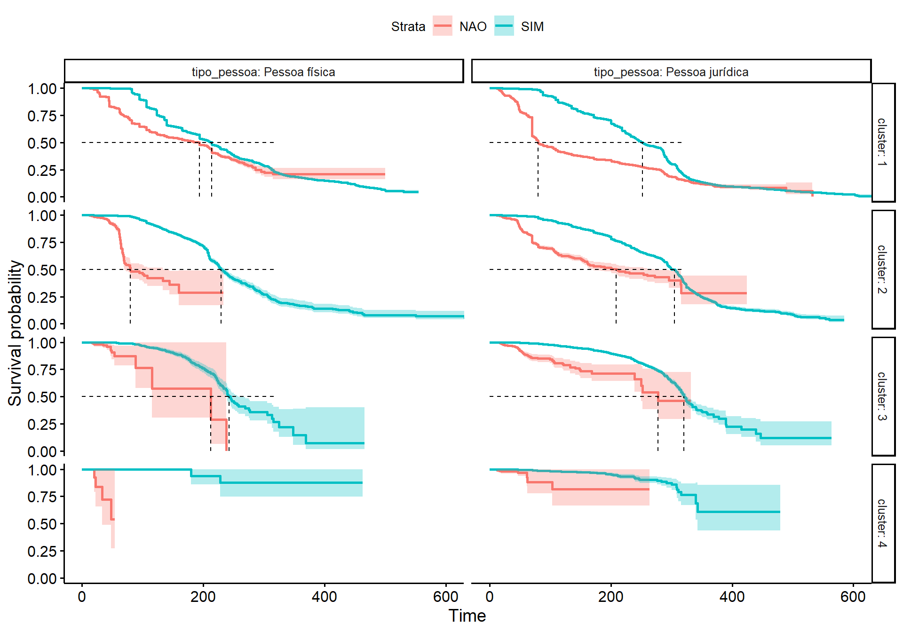
A tabela e o gráfico acima trazem os resultados que espéravamos com a precisão das medidas. Duas combinações que merece destaque são as que se referem à linha do cluster 1. Oberva-se nesses casos que há uma grande diferença entre os tempos de PJ e PF na avaliação dos créditos ajuizados. Isso não ocorre no caso de PF. Mais ainda, no caso de PJ, o tempo para alcançar o 50% de sobrevivência é bem maior do que o de PJ, o que não combina com o que normalmente se espera na comparação dessas duas classes. Possivelmente o tipo da receita do principal associado a cada crédito pode explicar esse fenômeno. Nesse caso, é provável que haja algum tipo de receita de pessoa jurídica que não traz muita margem para ajuizamento e que afeta principalmente os créditos de menor valor.
Análise por tipo de receita do principal
A sessão anterior terminou com a sugestão de que o fenômeno de rápida exclusão de créditos associados ao cluster 1, pessoa jurídica não ajuizada pode estar associada ao tipo de receita do principal. Essa hipótese é motivo suficente para analisarmos com mais cuidado essa variável e descobrirmos suas características tanto da estatística descritiva como da análise de sobrevivência.
Começamos pela estatística descritiva. Nesse caso como há vários tipos de receita do principal, o nosso primeiro cuidado é identificar os mais relevantes para a análise. Dessa forma através de uma tabela de frequência identificamos os tipos de receita mais frequentes e cujas frequências acumuladas aproximem de 80%.
n % val% %cum val%cum
DIV ATIVA-SIMPLES NACIONAL 742233 17.9 17.9 17.9 17.9
Receita da dívida ativa - IRPF 500180 12.0 12.0 29.9 29.9
Receita da dívida ativa - IRPJ 458271 11.0 11.0 40.9 40.9
Receita da dívida ativa - COFINS 444515 10.7 10.7 51.6 51.6
Receita da dívida ativa - CSLL 438522 10.5 10.5 62.2 62.2
Receita da dívida ativa - PIS 287447 6.9 6.9 69.1 69.1
R D Ativa - Multa Isolada 225676 5.4 5.4 74.5 74.5
Receita da dívida ativa - Multa - CLT 209566 5.0 5.0 79.5 79.5Pela tabela de frequência concluímos que exsitem oito tipos de receita do principal mais frequentes que ao se somar suas frequências alcanca-se o valor de aproximadamente 89%. São esses oito tipos que vamos aprofundar nos próximos gráficos e tabelas.
Começando pelas estatísticas descritivas básicas:
# A tibble: 8 x 6
receita_principal quantidade mínimo máximo média mediana
<chr> <int> <dbl> <dbl> <dbl> <dbl>
1 DIV ATIVA-SIMPLES NACIONAL 742233 11.0 3.71e7 5.19e4 8363.
2 R D Ativa - Multa Isolada 225676 24.0 8.55e8 9.80e4 2412.
3 Receita da dívida ativa - COFINS 444515 1.63 5.82e9 2.92e5 15573.
4 Receita da dívida ativa - CSLL 438522 0.02 2.45e9 1.38e5 8629.
5 Receita da dívida ativa - IRPF 500180 9.43 1.22e9 5.68e4 7437.
6 Receita da dívida ativa - IRPJ 458271 0.02 6.81e9 2.92e5 11499.
7 Receita da dívida ativa - Multa - CLT 209566 40.2 2.13e7 2.09e4 5217.
8 Receita da dívida ativa - PIS 287447 2.44 2.17e9 1.07e5 6763.Agora o ranking para o valor consolidado total
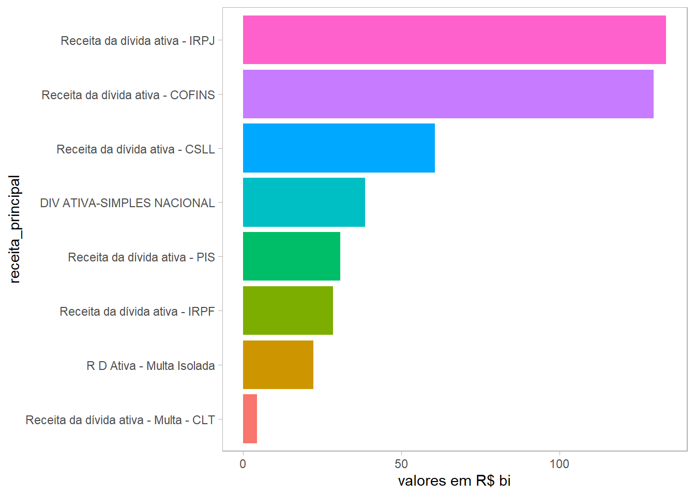
Agora como se dividem essas classes na observação de ajuizamento e clusters.
Vamos observar primeiro as quantidades
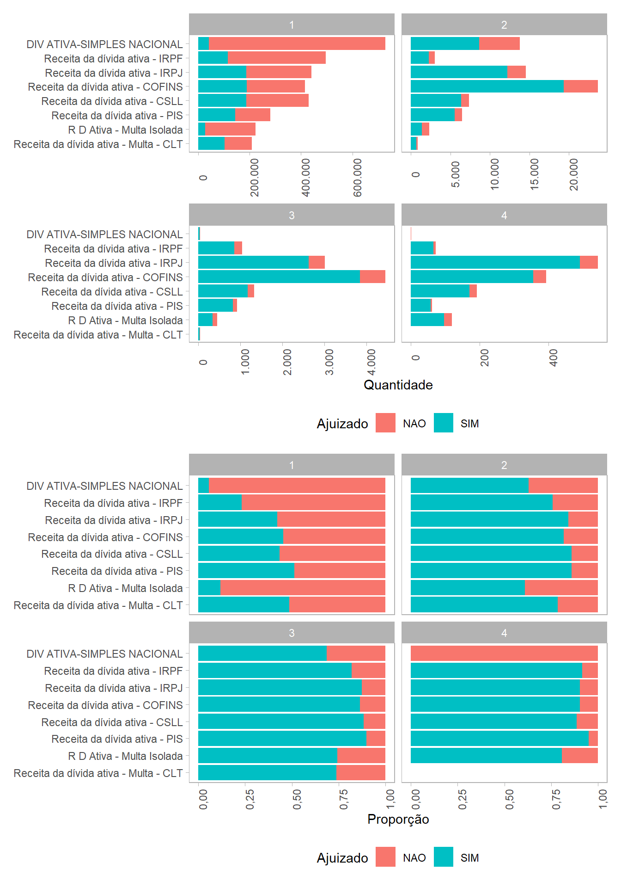
Ao observarmos as quantidades em valores absolutos, considerando ainda que os gráficos para essa situação estão com escala livre, verificamos a grande importância do Simples para o cluster 1. É possível ainda visualizar que esse tipo de receita tem ainda alguma relevância para o cluster 2, e é praticamente ausente nos demais clusters.
Já quando observamos a distribuição proporcional das quantidades, fica fácil avaliar que a quantidade de créditos ajuizados só não é importante para o cluster 1, o que não ocorre para os demais clusters, para qualquer um dos tipos de receita. Mais especificamente para o Simples, é notório que esse quadro é bem mais acentuado.
Agora analisamos os valores totais consolidados
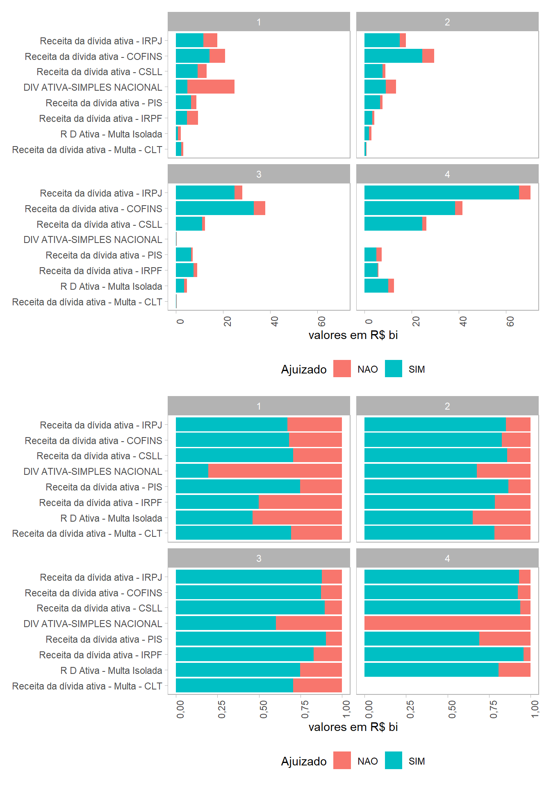
Quando observamos os valores totais, percebemos a importância dos lançamentos ajuizados mesmo para o cluster 1 onde a quntidade desse tipo de lançamento é bem inferior do que a classe dos não ajuizados. A úncia exceção significativa para essa regra refere-se aos tributos de Simples nacional onde os valores consolidados de não ajuizados são maiores do que os valores ajuizados.
Agora vamos às análises de sobrevivência. Começando com a comparação entre as classes do grupo
Call:
survdiff(formula = sobrevivencia_receita_principal ~ receita_principal,
data = trabalho_receita_principal)
N Observed
receita_principal=DIV ATIVA-SIMPLES NACIONAL 742233 134611
receita_principal=R D Ativa - Multa Isolada 225676 41652
receita_principal=Receita da dívida ativa - COFINS 444515 92914
receita_principal=Receita da dívida ativa - CSLL 438522 89146
receita_principal=Receita da dívida ativa - IRPF 500180 106365
receita_principal=Receita da dívida ativa - IRPJ 458271 91798
receita_principal=Receita da dívida ativa - Multa - CLT 209566 51422
receita_principal=Receita da dívida ativa - PIS 287447 60853
Expected (O-E)^2/E
receita_principal=DIV ATIVA-SIMPLES NACIONAL 53509 122922
receita_principal=R D Ativa - Multa Isolada 20822 20839
receita_principal=Receita da dívida ativa - COFINS 126024 8699
receita_principal=Receita da dívida ativa - CSLL 113149 5092
receita_principal=Receita da dívida ativa - IRPF 82801 6706
receita_principal=Receita da dívida ativa - IRPJ 120745 6940
receita_principal=Receita da dívida ativa - Multa - CLT 67795 3954
receita_principal=Receita da dívida ativa - PIS 83916 6338
(O-E)^2/V
receita_principal=DIV ATIVA-SIMPLES NACIONAL 146340
receita_principal=R D Ativa - Multa Isolada 21880
receita_principal=Receita da dívida ativa - COFINS 10948
receita_principal=Receita da dívida ativa - CSLL 6242
receita_principal=Receita da dívida ativa - IRPF 7902
receita_principal=Receita da dívida ativa - IRPJ 8665
receita_principal=Receita da dívida ativa - Multa - CLT 4474
receita_principal=Receita da dívida ativa - PIS 7356
Chisq= 206089 on 7 degrees of freedom, p= <2e-16 O teste chi-quadrado indica que os grupos têm comportamento diferente na sobrevivência dos créditos ativos. Mais importante do que isso, o quadro acima indica a forte discrepância entre o esperado de um modelo de equilíbrio e o que foi observado para a classe que corresponde aos créditos de receita para o simples nacional. Nesse caso, favorecendo uma sobrevivência bastante inferior ao esperado quando comparado com as demais classes.
Agora vamos às expectavias medianas de sobrevivência.
Call: survfit(formula = sobrevivencia_receita_principal ~ receita_principal,
data = trabalho_receita_principal)
n events median
receita_principal=DIV ATIVA-SIMPLES NACIONAL 742233 134611 80.1
receita_principal=R D Ativa - Multa Isolada 225676 41652 161.4
receita_principal=Receita da dívida ativa - COFINS 444515 92914 243.2
receita_principal=Receita da dívida ativa - CSLL 438522 89146 246.1
receita_principal=Receita da dívida ativa - IRPF 500180 106365 154.6
receita_principal=Receita da dívida ativa - IRPJ 458271 91798 246.1
receita_principal=Receita da dívida ativa - Multa - CLT 209566 51422 237.0
receita_principal=Receita da dívida ativa - PIS 287447 60853 240.5
0.95LCL 0.95UCL
receita_principal=DIV ATIVA-SIMPLES NACIONAL 80.1 80.1
receita_principal=R D Ativa - Multa Isolada 155.8 168.5
receita_principal=Receita da dívida ativa - COFINS 243.2 244.4
receita_principal=Receita da dívida ativa - CSLL 246.1 246.2
receita_principal=Receita da dívida ativa - IRPF 150.3 159.8
receita_principal=Receita da dívida ativa - IRPJ 246.1 248.9
receita_principal=Receita da dívida ativa - Multa - CLT 235.4 238.6
receita_principal=Receita da dívida ativa - PIS 240.5 241.6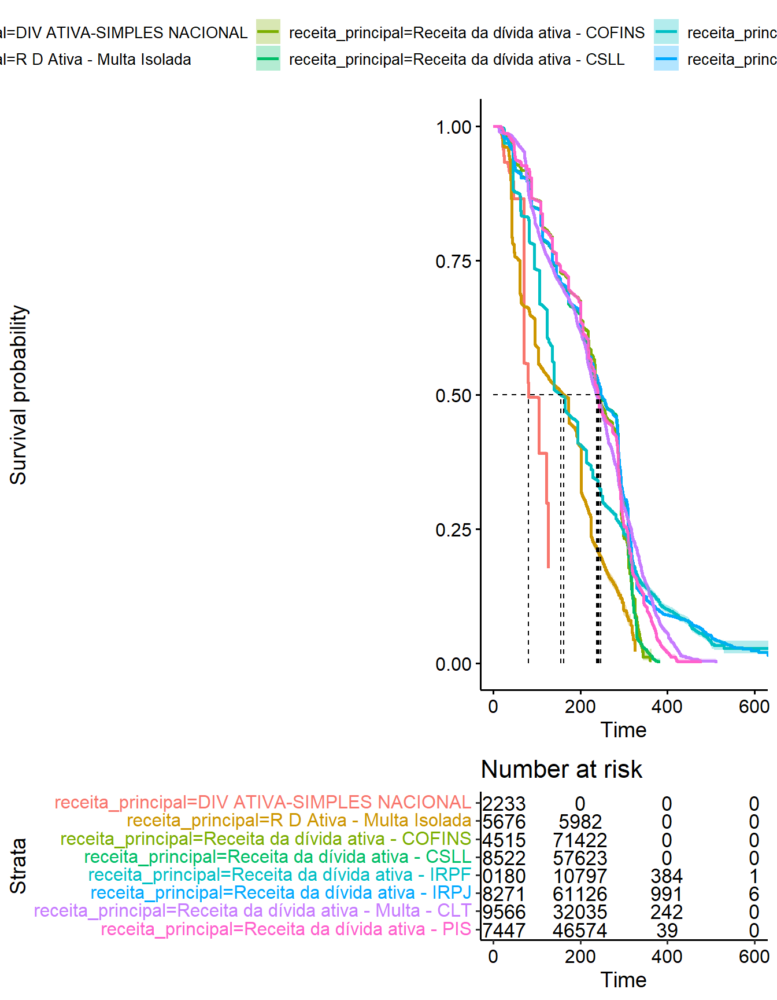
Como já estava se desenhando desde o começo da análise, a probabilidade de sobrevivência mediana está associada a um número de meses que corresponde à metade do que é observado na classe que vem logoa seguir e corresponde a 1/3 do tempo observado nas classe mais longevas: CSLL e IRPJ.
Para confirmar a influência dos valores consolidados na definição da lacuna de sobrevivência de pessoa jurídica no cluster 1, vamos agora à análise que cruza as categorias de tipo de receita e cluster.
Call: survfit(formula = sobrevivencia_receita_principal ~ cluster +
receita_principal + indicador_ajuizado, data = trabalho_receita_principal)
n
cluster=1, receita_principal=DIV ATIVA-SIMPLES NACIONAL , indicador_ajuizado=NAO 687114
cluster=1, receita_principal=DIV ATIVA-SIMPLES NACIONAL , indicador_ajuizado=SIM 41297
cluster=1, receita_principal=R D Ativa - Multa Isolada , indicador_ajuizado=NAO 196597
cluster=1, receita_principal=R D Ativa - Multa Isolada , indicador_ajuizado=SIM 26195
cluster=1, receita_principal=Receita da dívida ativa - COFINS , indicador_ajuizado=NAO 226816
cluster=1, receita_principal=Receita da dívida ativa - COFINS , indicador_ajuizado=SIM 189183
cluster=1, receita_principal=Receita da dívida ativa - CSLL , indicador_ajuizado=NAO 243395
cluster=1, receita_principal=Receita da dívida ativa - CSLL , indicador_ajuizado=SIM 186223
cluster=1, receita_principal=Receita da dívida ativa - IRPF , indicador_ajuizado=NAO 381401
cluster=1, receita_principal=Receita da dívida ativa - IRPF , indicador_ajuizado=SIM 114652
cluster=1, receita_principal=Receita da dívida ativa - IRPJ , indicador_ajuizado=NAO 253989
cluster=1, receita_principal=Receita da dívida ativa - IRPJ , indicador_ajuizado=SIM 186187
cluster=1, receita_principal=Receita da dívida ativa - Multa - CLT, indicador_ajuizado=NAO 107021
cluster=1, receita_principal=Receita da dívida ativa - Multa - CLT, indicador_ajuizado=SIM 101629
cluster=1, receita_principal=Receita da dívida ativa - PIS , indicador_ajuizado=NAO 136063
cluster=1, receita_principal=Receita da dívida ativa - PIS , indicador_ajuizado=SIM 143940
cluster=2, receita_principal=DIV ATIVA-SIMPLES NACIONAL , indicador_ajuizado=NAO 5103
cluster=2, receita_principal=DIV ATIVA-SIMPLES NACIONAL , indicador_ajuizado=SIM 8670
cluster=2, receita_principal=R D Ativa - Multa Isolada , indicador_ajuizado=NAO 901
cluster=2, receita_principal=R D Ativa - Multa Isolada , indicador_ajuizado=SIM 1410
cluster=2, receita_principal=Receita da dívida ativa - COFINS , indicador_ajuizado=NAO 4336
cluster=2, receita_principal=Receita da dívida ativa - COFINS , indicador_ajuizado=SIM 19329
cluster=2, receita_principal=Receita da dívida ativa - CSLL , indicador_ajuizado=NAO 1033
cluster=2, receita_principal=Receita da dívida ativa - CSLL , indicador_ajuizado=SIM 6345
cluster=2, receita_principal=Receita da dívida ativa - IRPF , indicador_ajuizado=NAO 728
cluster=2, receita_principal=Receita da dívida ativa - IRPF , indicador_ajuizado=SIM 2278
cluster=2, receita_principal=Receita da dívida ativa - IRPJ , indicador_ajuizado=NAO 2305
cluster=2, receita_principal=Receita da dívida ativa - IRPJ , indicador_ajuizado=SIM 12234
cluster=2, receita_principal=Receita da dívida ativa - Multa - CLT, indicador_ajuizado=NAO 187
cluster=2, receita_principal=Receita da dívida ativa - Multa - CLT, indicador_ajuizado=SIM 683
cluster=2, receita_principal=Receita da dívida ativa - PIS , indicador_ajuizado=NAO 910
cluster=2, receita_principal=Receita da dívida ativa - PIS , indicador_ajuizado=SIM 5554
cluster=3, receita_principal=DIV ATIVA-SIMPLES NACIONAL , indicador_ajuizado=NAO 15
cluster=3, receita_principal=DIV ATIVA-SIMPLES NACIONAL , indicador_ajuizado=SIM 33
cluster=3, receita_principal=R D Ativa - Multa Isolada , indicador_ajuizado=NAO 116
cluster=3, receita_principal=R D Ativa - Multa Isolada , indicador_ajuizado=SIM 337
cluster=3, receita_principal=Receita da dívida ativa - COFINS , indicador_ajuizado=NAO 602
cluster=3, receita_principal=Receita da dívida ativa - COFINS , indicador_ajuizado=SIM 3855
cluster=3, receita_principal=Receita da dívida ativa - CSLL , indicador_ajuizado=NAO 154
cluster=3, receita_principal=Receita da dívida ativa - CSLL , indicador_ajuizado=SIM 1180
cluster=3, receita_principal=Receita da dívida ativa - IRPF , indicador_ajuizado=NAO 189
cluster=3, receita_principal=Receita da dívida ativa - IRPF , indicador_ajuizado=SIM 860
cluster=3, receita_principal=Receita da dívida ativa - IRPJ , indicador_ajuizado=NAO 383
cluster=3, receita_principal=Receita da dívida ativa - IRPJ , indicador_ajuizado=SIM 2629
cluster=3, receita_principal=Receita da dívida ativa - Multa - CLT, indicador_ajuizado=NAO 12
cluster=3, receita_principal=Receita da dívida ativa - Multa - CLT, indicador_ajuizado=SIM 34
cluster=3, receita_principal=Receita da dívida ativa - PIS , indicador_ajuizado=NAO 93
cluster=3, receita_principal=Receita da dívida ativa - PIS , indicador_ajuizado=SIM 826
cluster=4, receita_principal=DIV ATIVA-SIMPLES NACIONAL , indicador_ajuizado=NAO 1
cluster=4, receita_principal=R D Ativa - Multa Isolada , indicador_ajuizado=NAO 23
cluster=4, receita_principal=R D Ativa - Multa Isolada , indicador_ajuizado=SIM 97
cluster=4, receita_principal=Receita da dívida ativa - COFINS , indicador_ajuizado=NAO 38
cluster=4, receita_principal=Receita da dívida ativa - COFINS , indicador_ajuizado=SIM 356
cluster=4, receita_principal=Receita da dívida ativa - CSLL , indicador_ajuizado=NAO 22
cluster=4, receita_principal=Receita da dívida ativa - CSLL , indicador_ajuizado=SIM 170
cluster=4, receita_principal=Receita da dívida ativa - IRPF , indicador_ajuizado=NAO 6
cluster=4, receita_principal=Receita da dívida ativa - IRPF , indicador_ajuizado=SIM 66
cluster=4, receita_principal=Receita da dívida ativa - IRPJ , indicador_ajuizado=NAO 52
cluster=4, receita_principal=Receita da dívida ativa - IRPJ , indicador_ajuizado=SIM 492
cluster=4, receita_principal=Receita da dívida ativa - PIS , indicador_ajuizado=NAO 3
cluster=4, receita_principal=Receita da dívida ativa - PIS , indicador_ajuizado=SIM 58
events
cluster=1, receita_principal=DIV ATIVA-SIMPLES NACIONAL , indicador_ajuizado=NAO 120651
cluster=1, receita_principal=DIV ATIVA-SIMPLES NACIONAL , indicador_ajuizado=SIM 12597
cluster=1, receita_principal=R D Ativa - Multa Isolada , indicador_ajuizado=NAO 33147
cluster=1, receita_principal=R D Ativa - Multa Isolada , indicador_ajuizado=SIM 8068
cluster=1, receita_principal=Receita da dívida ativa - COFINS , indicador_ajuizado=NAO 26905
cluster=1, receita_principal=Receita da dívida ativa - COFINS , indicador_ajuizado=SIM 61815
cluster=1, receita_principal=Receita da dívida ativa - CSLL , indicador_ajuizado=NAO 29343
cluster=1, receita_principal=Receita da dívida ativa - CSLL , indicador_ajuizado=SIM 58770
cluster=1, receita_principal=Receita da dívida ativa - IRPF , indicador_ajuizado=NAO 69270
cluster=1, receita_principal=Receita da dívida ativa - IRPF , indicador_ajuizado=SIM 36226
cluster=1, receita_principal=Receita da dívida ativa - IRPJ , indicador_ajuizado=NAO 30770
cluster=1, receita_principal=Receita da dívida ativa - IRPJ , indicador_ajuizado=SIM 58714
cluster=1, receita_principal=Receita da dívida ativa - Multa - CLT, indicador_ajuizado=NAO 21037
cluster=1, receita_principal=Receita da dívida ativa - Multa - CLT, indicador_ajuizado=SIM 30267
cluster=1, receita_principal=Receita da dívida ativa - PIS , indicador_ajuizado=NAO 15275
cluster=1, receita_principal=Receita da dívida ativa - PIS , indicador_ajuizado=SIM 44729
cluster=2, receita_principal=DIV ATIVA-SIMPLES NACIONAL , indicador_ajuizado=NAO 384
cluster=2, receita_principal=DIV ATIVA-SIMPLES NACIONAL , indicador_ajuizado=SIM 977
cluster=2, receita_principal=R D Ativa - Multa Isolada , indicador_ajuizado=NAO 73
cluster=2, receita_principal=R D Ativa - Multa Isolada , indicador_ajuizado=SIM 324
cluster=2, receita_principal=Receita da dívida ativa - COFINS , indicador_ajuizado=NAO 381
cluster=2, receita_principal=Receita da dívida ativa - COFINS , indicador_ajuizado=SIM 3411
cluster=2, receita_principal=Receita da dívida ativa - CSLL , indicador_ajuizado=NAO 64
cluster=2, receita_principal=Receita da dívida ativa - CSLL , indicador_ajuizado=SIM 889
cluster=2, receita_principal=Receita da dívida ativa - IRPF , indicador_ajuizado=NAO 68
cluster=2, receita_principal=Receita da dívida ativa - IRPF , indicador_ajuizado=SIM 626
cluster=2, receita_principal=Receita da dívida ativa - IRPJ , indicador_ajuizado=NAO 163
cluster=2, receita_principal=Receita da dívida ativa - IRPJ , indicador_ajuizado=SIM 1816
cluster=2, receita_principal=Receita da dívida ativa - Multa - CLT, indicador_ajuizado=NAO 18
cluster=2, receita_principal=Receita da dívida ativa - Multa - CLT, indicador_ajuizado=SIM 91
cluster=2, receita_principal=Receita da dívida ativa - PIS , indicador_ajuizado=NAO 47
cluster=2, receita_principal=Receita da dívida ativa - PIS , indicador_ajuizado=SIM 752
cluster=3, receita_principal=DIV ATIVA-SIMPLES NACIONAL , indicador_ajuizado=NAO 1
cluster=3, receita_principal=DIV ATIVA-SIMPLES NACIONAL , indicador_ajuizado=SIM 1
cluster=3, receita_principal=R D Ativa - Multa Isolada , indicador_ajuizado=NAO 2
cluster=3, receita_principal=R D Ativa - Multa Isolada , indicador_ajuizado=SIM 33
cluster=3, receita_principal=Receita da dívida ativa - COFINS , indicador_ajuizado=NAO 28
cluster=3, receita_principal=Receita da dívida ativa - COFINS , indicador_ajuizado=SIM 361
cluster=3, receita_principal=Receita da dívida ativa - CSLL , indicador_ajuizado=NAO 6
cluster=3, receita_principal=Receita da dívida ativa - CSLL , indicador_ajuizado=SIM 68
cluster=3, receita_principal=Receita da dívida ativa - IRPF , indicador_ajuizado=NAO 11
cluster=3, receita_principal=Receita da dívida ativa - IRPF , indicador_ajuizado=SIM 162
cluster=3, receita_principal=Receita da dívida ativa - IRPJ , indicador_ajuizado=NAO 30
cluster=3, receita_principal=Receita da dívida ativa - IRPJ , indicador_ajuizado=SIM 288
cluster=3, receita_principal=Receita da dívida ativa - Multa - CLT, indicador_ajuizado=NAO 3
cluster=3, receita_principal=Receita da dívida ativa - Multa - CLT, indicador_ajuizado=SIM 6
cluster=3, receita_principal=Receita da dívida ativa - PIS , indicador_ajuizado=NAO 2
cluster=3, receita_principal=Receita da dívida ativa - PIS , indicador_ajuizado=SIM 45
cluster=4, receita_principal=DIV ATIVA-SIMPLES NACIONAL , indicador_ajuizado=NAO 0
cluster=4, receita_principal=R D Ativa - Multa Isolada , indicador_ajuizado=NAO 2
cluster=4, receita_principal=R D Ativa - Multa Isolada , indicador_ajuizado=SIM 3
cluster=4, receita_principal=Receita da dívida ativa - COFINS , indicador_ajuizado=NAO 2
cluster=4, receita_principal=Receita da dívida ativa - COFINS , indicador_ajuizado=SIM 11
cluster=4, receita_principal=Receita da dívida ativa - CSLL , indicador_ajuizado=NAO 0
cluster=4, receita_principal=Receita da dívida ativa - CSLL , indicador_ajuizado=SIM 6
cluster=4, receita_principal=Receita da dívida ativa - IRPF , indicador_ajuizado=NAO 0
cluster=4, receita_principal=Receita da dívida ativa - IRPF , indicador_ajuizado=SIM 2
cluster=4, receita_principal=Receita da dívida ativa - IRPJ , indicador_ajuizado=NAO 1
cluster=4, receita_principal=Receita da dívida ativa - IRPJ , indicador_ajuizado=SIM 16
cluster=4, receita_principal=Receita da dívida ativa - PIS , indicador_ajuizado=NAO 0
cluster=4, receita_principal=Receita da dívida ativa - PIS , indicador_ajuizado=SIM 3
median
cluster=1, receita_principal=DIV ATIVA-SIMPLES NACIONAL , indicador_ajuizado=NAO 69.5
cluster=1, receita_principal=DIV ATIVA-SIMPLES NACIONAL , indicador_ajuizado=SIM 125.4
cluster=1, receita_principal=R D Ativa - Multa Isolada , indicador_ajuizado=NAO 63.3
cluster=1, receita_principal=R D Ativa - Multa Isolada , indicador_ajuizado=SIM 200.9
cluster=1, receita_principal=Receita da dívida ativa - COFINS , indicador_ajuizado=NAO 153.6
cluster=1, receita_principal=Receita da dívida ativa - COFINS , indicador_ajuizado=SIM 251.7
cluster=1, receita_principal=Receita da dívida ativa - CSLL , indicador_ajuizado=NAO 171.6
cluster=1, receita_principal=Receita da dívida ativa - CSLL , indicador_ajuizado=SIM 282.0
cluster=1, receita_principal=Receita da dívida ativa - IRPF , indicador_ajuizado=NAO 130.4
cluster=1, receita_principal=Receita da dívida ativa - IRPF , indicador_ajuizado=SIM 193.9
cluster=1, receita_principal=Receita da dívida ativa - IRPJ , indicador_ajuizado=NAO 166.2
cluster=1, receita_principal=Receita da dívida ativa - IRPJ , indicador_ajuizado=SIM 280.2
cluster=1, receita_principal=Receita da dívida ativa - Multa - CLT, indicador_ajuizado=NAO 113.7
cluster=1, receita_principal=Receita da dívida ativa - Multa - CLT, indicador_ajuizado=SIM 258.1
cluster=1, receita_principal=Receita da dívida ativa - PIS , indicador_ajuizado=NAO 200.4
cluster=1, receita_principal=Receita da dívida ativa - PIS , indicador_ajuizado=SIM 243.2
cluster=2, receita_principal=DIV ATIVA-SIMPLES NACIONAL , indicador_ajuizado=NAO 104.6
cluster=2, receita_principal=DIV ATIVA-SIMPLES NACIONAL , indicador_ajuizado=SIM 122.2
cluster=2, receita_principal=R D Ativa - Multa Isolada , indicador_ajuizado=NAO 66.6
cluster=2, receita_principal=R D Ativa - Multa Isolada , indicador_ajuizado=SIM 196.6
cluster=2, receita_principal=Receita da dívida ativa - COFINS , indicador_ajuizado=NAO 210.6
cluster=2, receita_principal=Receita da dívida ativa - COFINS , indicador_ajuizado=SIM 298.8
cluster=2, receita_principal=Receita da dívida ativa - CSLL , indicador_ajuizado=NAO NA
cluster=2, receita_principal=Receita da dívida ativa - CSLL , indicador_ajuizado=SIM 288.9
cluster=2, receita_principal=Receita da dívida ativa - IRPF , indicador_ajuizado=NAO NA
cluster=2, receita_principal=Receita da dívida ativa - IRPF , indicador_ajuizado=SIM 240.2
cluster=2, receita_principal=Receita da dívida ativa - IRPJ , indicador_ajuizado=NAO 315.2
cluster=2, receita_principal=Receita da dívida ativa - IRPJ , indicador_ajuizado=SIM 292.4
cluster=2, receita_principal=Receita da dívida ativa - Multa - CLT, indicador_ajuizado=NAO 133.2
cluster=2, receita_principal=Receita da dívida ativa - Multa - CLT, indicador_ajuizado=SIM 292.4
cluster=2, receita_principal=Receita da dívida ativa - PIS , indicador_ajuizado=NAO NA
cluster=2, receita_principal=Receita da dívida ativa - PIS , indicador_ajuizado=SIM 310.0
cluster=3, receita_principal=DIV ATIVA-SIMPLES NACIONAL , indicador_ajuizado=NAO NA
cluster=3, receita_principal=DIV ATIVA-SIMPLES NACIONAL , indicador_ajuizado=SIM NA
cluster=3, receita_principal=R D Ativa - Multa Isolada , indicador_ajuizado=NAO NA
cluster=3, receita_principal=R D Ativa - Multa Isolada , indicador_ajuizado=SIM 298.8
cluster=3, receita_principal=Receita da dívida ativa - COFINS , indicador_ajuizado=NAO NA
cluster=3, receita_principal=Receita da dívida ativa - COFINS , indicador_ajuizado=SIM 315.4
cluster=3, receita_principal=Receita da dívida ativa - CSLL , indicador_ajuizado=NAO 250.0
cluster=3, receita_principal=Receita da dívida ativa - CSLL , indicador_ajuizado=SIM 315.4
cluster=3, receita_principal=Receita da dívida ativa - IRPF , indicador_ajuizado=NAO 237.7
cluster=3, receita_principal=Receita da dívida ativa - IRPF , indicador_ajuizado=SIM 246.5
cluster=3, receita_principal=Receita da dívida ativa - IRPJ , indicador_ajuizado=NAO 252.4
cluster=3, receita_principal=Receita da dívida ativa - IRPJ , indicador_ajuizado=SIM 307.8
cluster=3, receita_principal=Receita da dívida ativa - Multa - CLT, indicador_ajuizado=NAO 148.4
cluster=3, receita_principal=Receita da dívida ativa - Multa - CLT, indicador_ajuizado=SIM 311.7
cluster=3, receita_principal=Receita da dívida ativa - PIS , indicador_ajuizado=NAO NA
cluster=3, receita_principal=Receita da dívida ativa - PIS , indicador_ajuizado=SIM 350.8
cluster=4, receita_principal=DIV ATIVA-SIMPLES NACIONAL , indicador_ajuizado=NAO NA
cluster=4, receita_principal=R D Ativa - Multa Isolada , indicador_ajuizado=NAO NA
cluster=4, receita_principal=R D Ativa - Multa Isolada , indicador_ajuizado=SIM NA
cluster=4, receita_principal=Receita da dívida ativa - COFINS , indicador_ajuizado=NAO NA
cluster=4, receita_principal=Receita da dívida ativa - COFINS , indicador_ajuizado=SIM NA
cluster=4, receita_principal=Receita da dívida ativa - CSLL , indicador_ajuizado=NAO NA
cluster=4, receita_principal=Receita da dívida ativa - CSLL , indicador_ajuizado=SIM 300.2
cluster=4, receita_principal=Receita da dívida ativa - IRPF , indicador_ajuizado=NAO NA
cluster=4, receita_principal=Receita da dívida ativa - IRPF , indicador_ajuizado=SIM NA
cluster=4, receita_principal=Receita da dívida ativa - IRPJ , indicador_ajuizado=NAO NA
cluster=4, receita_principal=Receita da dívida ativa - IRPJ , indicador_ajuizado=SIM NA
cluster=4, receita_principal=Receita da dívida ativa - PIS , indicador_ajuizado=NAO NA
cluster=4, receita_principal=Receita da dívida ativa - PIS , indicador_ajuizado=SIM NA
0.95LCL
cluster=1, receita_principal=DIV ATIVA-SIMPLES NACIONAL , indicador_ajuizado=NAO 69.5
cluster=1, receita_principal=DIV ATIVA-SIMPLES NACIONAL , indicador_ajuizado=SIM 125.4
cluster=1, receita_principal=R D Ativa - Multa Isolada , indicador_ajuizado=NAO 63.3
cluster=1, receita_principal=R D Ativa - Multa Isolada , indicador_ajuizado=SIM 200.9
cluster=1, receita_principal=Receita da dívida ativa - COFINS , indicador_ajuizado=NAO 144.5
cluster=1, receita_principal=Receita da dívida ativa - COFINS , indicador_ajuizado=SIM 249.1
cluster=1, receita_principal=Receita da dívida ativa - CSLL , indicador_ajuizado=NAO 165.7
cluster=1, receita_principal=Receita da dívida ativa - CSLL , indicador_ajuizado=SIM 281.1
cluster=1, receita_principal=Receita da dívida ativa - IRPF , indicador_ajuizado=NAO 127.7
cluster=1, receita_principal=Receita da dívida ativa - IRPF , indicador_ajuizado=SIM 193.9
cluster=1, receita_principal=Receita da dívida ativa - IRPJ , indicador_ajuizado=NAO 153.6
cluster=1, receita_principal=Receita da dívida ativa - IRPJ , indicador_ajuizado=SIM 274.7
cluster=1, receita_principal=Receita da dívida ativa - Multa - CLT, indicador_ajuizado=NAO 110.7
cluster=1, receita_principal=Receita da dívida ativa - Multa - CLT, indicador_ajuizado=SIM 256.8
cluster=1, receita_principal=Receita da dívida ativa - PIS , indicador_ajuizado=NAO 188.9
cluster=1, receita_principal=Receita da dívida ativa - PIS , indicador_ajuizado=SIM 243.2
cluster=2, receita_principal=DIV ATIVA-SIMPLES NACIONAL , indicador_ajuizado=NAO 104.6
cluster=2, receita_principal=DIV ATIVA-SIMPLES NACIONAL , indicador_ajuizado=SIM 122.2
cluster=2, receita_principal=R D Ativa - Multa Isolada , indicador_ajuizado=NAO 64.2
cluster=2, receita_principal=R D Ativa - Multa Isolada , indicador_ajuizado=SIM 190.1
cluster=2, receita_principal=Receita da dívida ativa - COFINS , indicador_ajuizado=NAO 162.1
cluster=2, receita_principal=Receita da dívida ativa - COFINS , indicador_ajuizado=SIM 297.9
cluster=2, receita_principal=Receita da dívida ativa - CSLL , indicador_ajuizado=NAO 208.8
cluster=2, receita_principal=Receita da dívida ativa - CSLL , indicador_ajuizado=SIM 285.5
cluster=2, receita_principal=Receita da dívida ativa - IRPF , indicador_ajuizado=NAO 69.6
cluster=2, receita_principal=Receita da dívida ativa - IRPF , indicador_ajuizado=SIM 232.6
cluster=2, receita_principal=Receita da dívida ativa - IRPJ , indicador_ajuizado=NAO 213.1
cluster=2, receita_principal=Receita da dívida ativa - IRPJ , indicador_ajuizado=SIM 287.5
cluster=2, receita_principal=Receita da dívida ativa - Multa - CLT, indicador_ajuizado=NAO 110.5
cluster=2, receita_principal=Receita da dívida ativa - Multa - CLT, indicador_ajuizado=SIM 260.8
cluster=2, receita_principal=Receita da dívida ativa - PIS , indicador_ajuizado=NAO 260.2
cluster=2, receita_principal=Receita da dívida ativa - PIS , indicador_ajuizado=SIM 308.5
cluster=3, receita_principal=DIV ATIVA-SIMPLES NACIONAL , indicador_ajuizado=NAO NA
cluster=3, receita_principal=DIV ATIVA-SIMPLES NACIONAL , indicador_ajuizado=SIM NA
cluster=3, receita_principal=R D Ativa - Multa Isolada , indicador_ajuizado=NAO NA
cluster=3, receita_principal=R D Ativa - Multa Isolada , indicador_ajuizado=SIM 261.6
cluster=3, receita_principal=Receita da dívida ativa - COFINS , indicador_ajuizado=NAO 238.6
cluster=3, receita_principal=Receita da dívida ativa - COFINS , indicador_ajuizado=SIM 310.0
cluster=3, receita_principal=Receita da dívida ativa - CSLL , indicador_ajuizado=NAO 168.0
cluster=3, receita_principal=Receita da dívida ativa - CSLL , indicador_ajuizado=SIM 300.2
cluster=3, receita_principal=Receita da dívida ativa - IRPF , indicador_ajuizado=NAO 67.7
cluster=3, receita_principal=Receita da dívida ativa - IRPF , indicador_ajuizado=SIM 239.3
cluster=3, receita_principal=Receita da dívida ativa - IRPJ , indicador_ajuizado=NAO 252.4
cluster=3, receita_principal=Receita da dívida ativa - IRPJ , indicador_ajuizado=SIM 300.2
cluster=3, receita_principal=Receita da dívida ativa - Multa - CLT, indicador_ajuizado=NAO 120.2
cluster=3, receita_principal=Receita da dívida ativa - Multa - CLT, indicador_ajuizado=SIM 171.3
cluster=3, receita_principal=Receita da dívida ativa - PIS , indicador_ajuizado=NAO NA
cluster=3, receita_principal=Receita da dívida ativa - PIS , indicador_ajuizado=SIM 328.5
cluster=4, receita_principal=DIV ATIVA-SIMPLES NACIONAL , indicador_ajuizado=NAO NA
cluster=4, receita_principal=R D Ativa - Multa Isolada , indicador_ajuizado=NAO 62.2
cluster=4, receita_principal=R D Ativa - Multa Isolada , indicador_ajuizado=SIM NA
cluster=4, receita_principal=Receita da dívida ativa - COFINS , indicador_ajuizado=NAO 103.5
cluster=4, receita_principal=Receita da dívida ativa - COFINS , indicador_ajuizado=SIM 308.5
cluster=4, receita_principal=Receita da dívida ativa - CSLL , indicador_ajuizado=NAO NA
cluster=4, receita_principal=Receita da dívida ativa - CSLL , indicador_ajuizado=SIM 291.9
cluster=4, receita_principal=Receita da dívida ativa - IRPF , indicador_ajuizado=NAO NA
cluster=4, receita_principal=Receita da dívida ativa - IRPF , indicador_ajuizado=SIM NA
cluster=4, receita_principal=Receita da dívida ativa - IRPJ , indicador_ajuizado=NAO NA
cluster=4, receita_principal=Receita da dívida ativa - IRPJ , indicador_ajuizado=SIM 315.9
cluster=4, receita_principal=Receita da dívida ativa - PIS , indicador_ajuizado=NAO NA
cluster=4, receita_principal=Receita da dívida ativa - PIS , indicador_ajuizado=SIM 247.6
0.95UCL
cluster=1, receita_principal=DIV ATIVA-SIMPLES NACIONAL , indicador_ajuizado=NAO 69.5
cluster=1, receita_principal=DIV ATIVA-SIMPLES NACIONAL , indicador_ajuizado=SIM 125.4
cluster=1, receita_principal=R D Ativa - Multa Isolada , indicador_ajuizado=NAO 63.3
cluster=1, receita_principal=R D Ativa - Multa Isolada , indicador_ajuizado=SIM 200.9
cluster=1, receita_principal=Receita da dívida ativa - COFINS , indicador_ajuizado=NAO 162.7
cluster=1, receita_principal=Receita da dívida ativa - COFINS , indicador_ajuizado=SIM 254.2
cluster=1, receita_principal=Receita da dívida ativa - CSLL , indicador_ajuizado=NAO 171.6
cluster=1, receita_principal=Receita da dívida ativa - CSLL , indicador_ajuizado=SIM 282.5
cluster=1, receita_principal=Receita da dívida ativa - IRPF , indicador_ajuizado=NAO 133.9
cluster=1, receita_principal=Receita da dívida ativa - IRPF , indicador_ajuizado=SIM 193.9
cluster=1, receita_principal=Receita da dívida ativa - IRPJ , indicador_ajuizado=NAO 171.6
cluster=1, receita_principal=Receita da dívida ativa - IRPJ , indicador_ajuizado=SIM 282.0
cluster=1, receita_principal=Receita da dívida ativa - Multa - CLT, indicador_ajuizado=NAO 116.5
cluster=1, receita_principal=Receita da dívida ativa - Multa - CLT, indicador_ajuizado=SIM 259.3
cluster=1, receita_principal=Receita da dívida ativa - PIS , indicador_ajuizado=NAO 217.9
cluster=1, receita_principal=Receita da dívida ativa - PIS , indicador_ajuizado=SIM 243.2
cluster=2, receita_principal=DIV ATIVA-SIMPLES NACIONAL , indicador_ajuizado=NAO NA
cluster=2, receita_principal=DIV ATIVA-SIMPLES NACIONAL , indicador_ajuizado=SIM 122.2
cluster=2, receita_principal=R D Ativa - Multa Isolada , indicador_ajuizado=NAO 69.3
cluster=2, receita_principal=R D Ativa - Multa Isolada , indicador_ajuizado=SIM 201.2
cluster=2, receita_principal=Receita da dívida ativa - COFINS , indicador_ajuizado=NAO NA
cluster=2, receita_principal=Receita da dívida ativa - COFINS , indicador_ajuizado=SIM 306.5
cluster=2, receita_principal=Receita da dívida ativa - CSLL , indicador_ajuizado=NAO NA
cluster=2, receita_principal=Receita da dívida ativa - CSLL , indicador_ajuizado=SIM 295.2
cluster=2, receita_principal=Receita da dívida ativa - IRPF , indicador_ajuizado=NAO NA
cluster=2, receita_principal=Receita da dívida ativa - IRPF , indicador_ajuizado=SIM 251.2
cluster=2, receita_principal=Receita da dívida ativa - IRPJ , indicador_ajuizado=NAO NA
cluster=2, receita_principal=Receita da dívida ativa - IRPJ , indicador_ajuizado=SIM 297.0
cluster=2, receita_principal=Receita da dívida ativa - Multa - CLT, indicador_ajuizado=NAO NA
cluster=2, receita_principal=Receita da dívida ativa - Multa - CLT, indicador_ajuizado=SIM 317.3
cluster=2, receita_principal=Receita da dívida ativa - PIS , indicador_ajuizado=NAO NA
cluster=2, receita_principal=Receita da dívida ativa - PIS , indicador_ajuizado=SIM 315.4
cluster=3, receita_principal=DIV ATIVA-SIMPLES NACIONAL , indicador_ajuizado=NAO NA
cluster=3, receita_principal=DIV ATIVA-SIMPLES NACIONAL , indicador_ajuizado=SIM NA
cluster=3, receita_principal=R D Ativa - Multa Isolada , indicador_ajuizado=NAO NA
cluster=3, receita_principal=R D Ativa - Multa Isolada , indicador_ajuizado=SIM NA
cluster=3, receita_principal=Receita da dívida ativa - COFINS , indicador_ajuizado=NAO NA
cluster=3, receita_principal=Receita da dívida ativa - COFINS , indicador_ajuizado=SIM 323.6
cluster=3, receita_principal=Receita da dívida ativa - CSLL , indicador_ajuizado=NAO NA
cluster=3, receita_principal=Receita da dívida ativa - CSLL , indicador_ajuizado=SIM NA
cluster=3, receita_principal=Receita da dívida ativa - IRPF , indicador_ajuizado=NAO NA
cluster=3, receita_principal=Receita da dívida ativa - IRPF , indicador_ajuizado=SIM 274.9
cluster=3, receita_principal=Receita da dívida ativa - IRPJ , indicador_ajuizado=NAO NA
cluster=3, receita_principal=Receita da dívida ativa - IRPJ , indicador_ajuizado=SIM 317.1
cluster=3, receita_principal=Receita da dívida ativa - Multa - CLT, indicador_ajuizado=NAO NA
cluster=3, receita_principal=Receita da dívida ativa - Multa - CLT, indicador_ajuizado=SIM NA
cluster=3, receita_principal=Receita da dívida ativa - PIS , indicador_ajuizado=NAO NA
cluster=3, receita_principal=Receita da dívida ativa - PIS , indicador_ajuizado=SIM NA
cluster=4, receita_principal=DIV ATIVA-SIMPLES NACIONAL , indicador_ajuizado=NAO NA
cluster=4, receita_principal=R D Ativa - Multa Isolada , indicador_ajuizado=NAO NA
cluster=4, receita_principal=R D Ativa - Multa Isolada , indicador_ajuizado=SIM NA
cluster=4, receita_principal=Receita da dívida ativa - COFINS , indicador_ajuizado=NAO NA
cluster=4, receita_principal=Receita da dívida ativa - COFINS , indicador_ajuizado=SIM NA
cluster=4, receita_principal=Receita da dívida ativa - CSLL , indicador_ajuizado=NAO NA
cluster=4, receita_principal=Receita da dívida ativa - CSLL , indicador_ajuizado=SIM NA
cluster=4, receita_principal=Receita da dívida ativa - IRPF , indicador_ajuizado=NAO NA
cluster=4, receita_principal=Receita da dívida ativa - IRPF , indicador_ajuizado=SIM NA
cluster=4, receita_principal=Receita da dívida ativa - IRPJ , indicador_ajuizado=NAO NA
cluster=4, receita_principal=Receita da dívida ativa - IRPJ , indicador_ajuizado=SIM NA
cluster=4, receita_principal=Receita da dívida ativa - PIS , indicador_ajuizado=NAO NA
cluster=4, receita_principal=Receita da dívida ativa - PIS , indicador_ajuizado=SIM NA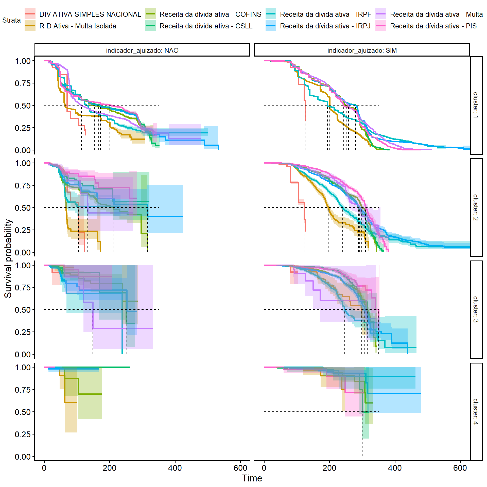
Com a tabela e gráfico acima, confirma-se que os créditos relacionados ao Simples nacional estão associados ao fenômeno da redução da expetativa mediana de sobrevivência da combinação de pessoa jurídica com o cluster 1, principalmente quado se foca nos lançamentos ajuizados.